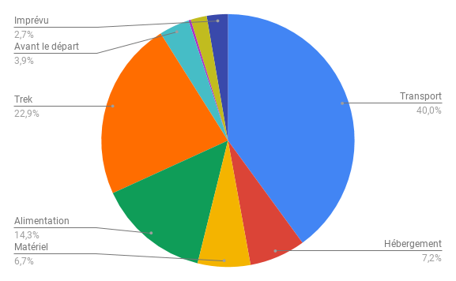

Instagram : @compaillettes
Instagram : @compaillettes Nous suivre :
 Facebook : Les compaillettes
Facebook : Les compaillettes
Instagram : @compaillettes
Nous avons eu la chance de trouver une association nommée ERDA dont la démarche correspondait exactement à nos attentes : de l'animation et du renforcement scolaire pour des enfants qui ne sont pas suffisamment soutenus et entourés. Cette association française créée par le père Tritz (SITE ERDA INTERNATIONAL : https://erdafoundation.wordpress.com/
SITE ERDA FRANCE : https://enfants-de-manille.net/home.php)
agit aux Philippines et plus particulièrement dans le bidonville de Tondo à Quezon City (un quartier de la capitale Manille). Là-bas, les infrastructures et les enseignants sont insuffisants pour que les élèves puissent aller en classe toute la journée, c'est pourquoi l'association les prend en charge l'autre demi journée.
Nous avons pendant près de deux ans effectué des extra jobs (vente de sapins, baby sitting, soutien scolaire, service à des événements...) pour contribuer à la plus grande partie de notre budget. Nous proposons un crowdfunding pour permettre à notre entourage de contribuer à leur échelle pour boucler notre budget de 7000 €. En effet il nous manque 500€ pour mener à bien notre projet.
Chaque don d'un particulier vous pouvez déduire 66% de votre don .
Chaque don d'une entreprise vous permet de bénéficier d’une réduction d’impôt sur
Le budget contient nos transports (avion, tuk tuk, bus), notre alimentation, ainsi que notre séjour de découverte du pays que nous allons effectuer lors de la dernière semaine. (voir graphique ci-dessous)

Par ailleurs, l'association nous demande d'apporter notre propre matériel. Là-bas, nous disposons d'une salle de classe (chaises, tables, tableaux).
Nous souhaiterions acheter du matériel pédagogique et ludique (ballon, feutres, papeterie) que nous achèterons sur place.
Réunions après réunions, extra-jobs après extra-jobs et avec l'immense soutien d'Aurélie Chevallier (notre accompagnatrice compagnon préférée :) ), le projet se rapproche à grand pas, nous sommes bouillants d'impatience et heureux de vous présenter ce beau projet qui nous tient à cœur. Un grand merci pour votre aide car même un tout petit geste est un pas de plus vers l'accomplissement de notre projet :).